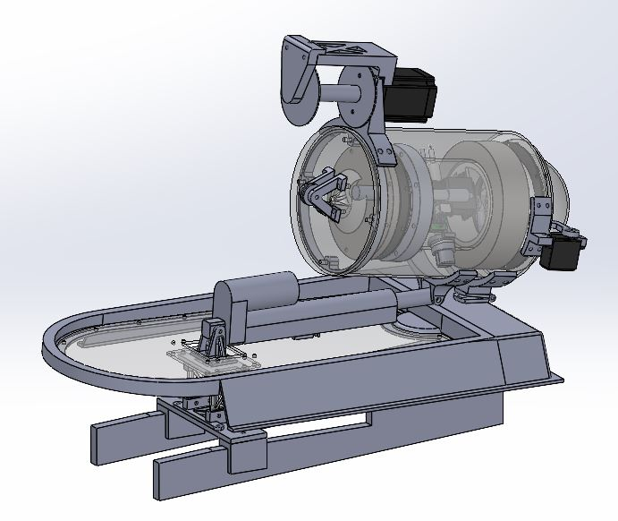
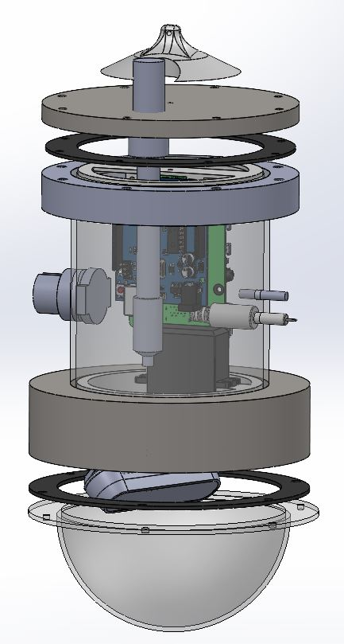

CoralBot
The autonomous coral reef monitoring robot
Robotics Capstone, Janurary - May 2023
About the Project:
CoralBot is an autonomous coral reef surveying robot that takes reef health metrics
such as water data and specific species populations for scientists to predict reef decay better.
This was done for e year-long Robotics Capstone, and the video below served as our final demo.
It demonstrates our final functionality of the boat moving out to locations, deploying our
sensor package into the water at specified depths, and outputting these readings to an off-board computer.

The Boat System
Below are some pictures of the subsystems of the boat. On the top right are the two motors which
operated the boat as a skid steer. These were controlled by ESCs, operated by an Arduino with
an IMU and a magnetometer to detect pose. On the bottom right was our sensor package, which
included an Arduino wired to various water data sensors like salinity, turbidity, temperature,
and pH. Lastly, on the bottom left, you can see the reel and chute system for deploying the
sensor package and some of the internal electronics, like the batteries for powering all subsystems.

The DSP System
Below are some pictures of the subsystems of the boat. On the top right are the two motors which
operated the boat as a skid steer. These were controlled by ESCs, operated by an Arduino with
an IMU and a magnetometer to detect pose. On the bottom right was our sensor package, which
included an Arduino wired to various water data sensors like salinity, turbidity, temperature,
and pH. Lastly, on the bottom left, you can see the reel and chute system for deploying the
sensor package and some of the internal electronics, like the batteries for powering all subsystems.